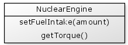

Or a slight variation on this idea that uses a setEngine() function instead.
{% highlight cfm %}And creating and using our car:
{% highlight cfm %}In both of these examples the engine is being explicitly provided to the car object. In the first example the engine is provided through the init() function. In the second example it is provided through the setEngine() function.
When we pair up our car and engine in this way, we can say that the engine object is being injected into the car object.
From this we can see that the car is dependent on the engine object, and in these examples the engine is injected into the car. Code that is written in this way is considered dependency injection.
Object creation separated from object usage
Our car object has now become a little more work to create. Previously the car and engine was created with a single line of code, but now we need two or more lines of code; create the engine, create the car, then associate them together.
However at the same time this change has the more important impact of reducing the coupling of the car and the engine.
So if we now change the creation of the engine so that it requires some additional parameters on creation, it would have no impact on the car:
{% highlight cfm %}Changing the implementation of our dependency
The most important advantage of dependency injection is to separate the creation of objects from their usage, which in turn reduces the coupling between objects, however there is an additional benefit where different kinds of dependencies (e.g. the Engine) can be provided to the dependent object (e.g. the Car).
Suppose we created a new kind of engine called a NuclearEngine:

It is very important to note that the functions here are identical to the SimpleEngine we have used above. In this case the setFuelIntake() function adjusts the amount of nuclear plasma (or whatever stuff is in nuclear systems) released within the engine.
Let's look at how our nuclear engine would be used in code. In this case, our nuclear engine also has a dependency of a NuclearCore:
{% highlight cfm %}So we made a significant change to the engine, but because we kept the set of engine functions unchanged (i.e. we kept the interface the same) then we can readily swap our new nuclear powered engine into our Car object.
Introducing an object factory
By separating the creation of our objects from the usage of our objects we have reduced coupling, improved maintainability, but increased the complexity of creating these objects. If you needed to create car objects in many places in your application it would become very messy very quickly due to the need for a core object, an engine object and a car object for each car with a nuclear engine. It is better to move this object construction into its own factory object.
This factory can hide any complexities associated with creating objects.

This may be implemented as follows:
{% highlight cfm %}Object factories are good candidates for being placed in the application scope:
{% highlight cfm %}And to use our factory, we may write:
{% highlight cfm %}The simple car's speed is #car.getCurrentSpeed()#
The nuclear powered car's speed is #car.getCurrentSpeed()#
Terminology
Dependency Injection is the common term for this technique of associating objects, however this technique is also known as "Inversion of Control", or "IoC".
The idea behind this is that conventional control would see an object grabbing whatever things it needed, as applied in procedural programming. When this control is inverted your objects are instead given what they need and they are only permitted to use what they have been explicitly given.
Another term used to describe the joining of objects using dependency injection is wiring. In other words you may say that when one object is injected into another object then they are wired together.
Conclusion
One of the fundamental guides in good object oriented design is to have objects that have low coupling. Having objects that have single responsibilities and separating out object construction from object usage can significantly help in reducing the coupling between objects. The side effect of this is that object creation becomes more complicated, but an object factory provides a good technique to manage the creation of these objects.